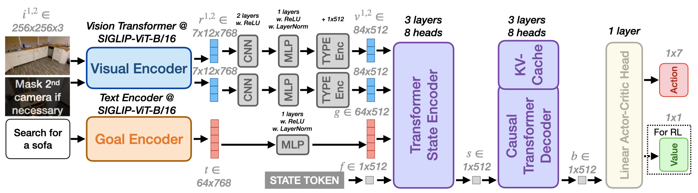

Real-World Qualitative Results
We evaluate RING directly on 4 unseen robots (Stretch-RE1, Stretch-RE1(factory config), LoCoBot, Unitree Go1) in a real-world apartment (layout shown below), without any further adaptation or real-world-specific finetuning. Here we present a trajectory for each robot embodiment. The agent's RGB input as well as a 3rd person perspective is shown for each example. All videos are sped up by up to 20x for ease of viewing.
[We use black boxes to hide individuals' identities when they appear in the frame.]

Floorplan of the real-world environment and the starting locations for each robot.
Four examples from 4 embodiments:
Stretch RE-1 (factory config camera): Find an apple.
In this experiment, we use the original off-the-shelf camera equipped on the Stretch RE-1 (D435 with a vertical field of view of $69^{\circ}$ and resolution of $720 \times 1280$). RING effectively explores the room and finds the apple despite having a narrow field of view.
Stretch RE-1 (camera config used in SPOC): Find a mug.
For this embodiment, following SPOC, we use 2 Intel RealSense 455 fixed cameras, with a vertical field of view of $59^{\circ}$ and resolution of $1280 \times 720$. RING explores multiple rooms while avoiding obstacles to find the mug.
Unitree Go1: Move to the toilet.
We use Unitree Go1 as another embodiment with lower height. The robot navigates to the toilet from the living room. Please note that our low-level controller is not perfect, causing the robot to drift to left when moving forward. Despite this limitation, RING shows robustness by correcting the robot's trajectory using RotateRight actions.
LoCoBot: Find a basketball.
The robot starts in a bedroom with 3 full 360 degree rotations to scan the room. It then navigates to the corridor and finds the basketball. The exhaustive exploration of the bedroom is due to the bias in simulation where the basketball is often placed in the bedroom.
Embodiment-Adaptive Behavior.
Stretch RE-1 & Unitree Go1: Navigate to the trashcan.
Both robots go to the kitchen to find the trashcan. In the left video, Stretch goes around the table in the corridor to avoid collisions. In the right video, when the table completely blocks the way, RING controls the Go1 robot to walk under the table because of its lower height.
Failure due to embodiment limitation.
Unitree Go1: Go to the sofa (Failed).
This example shows a failure example due to an embodiment limitation. The Go1 robot has a low camera placement with a limited field of view. This results in incorrectly identifying a leather bench at the foot of the bed as a sofa. (Please refer to the robot's first-person view to observe the recognition error.)